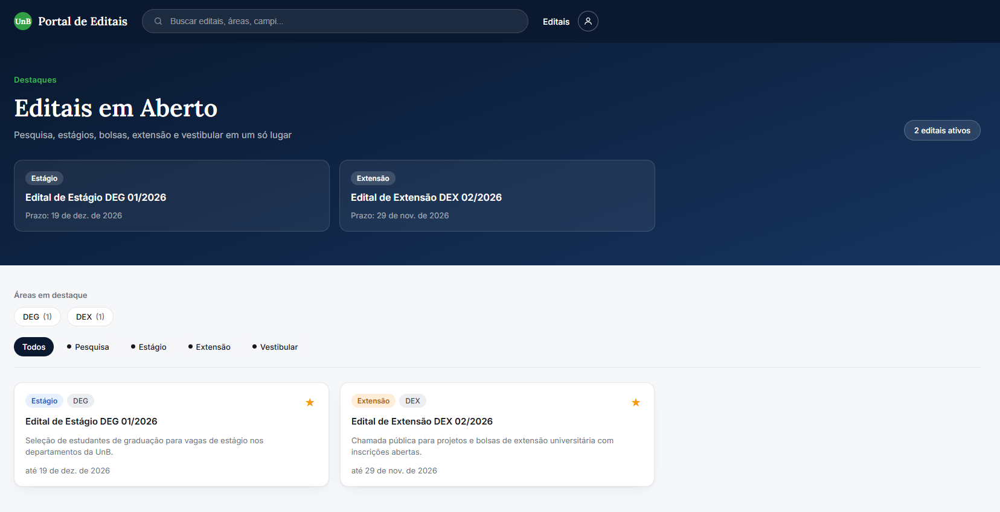
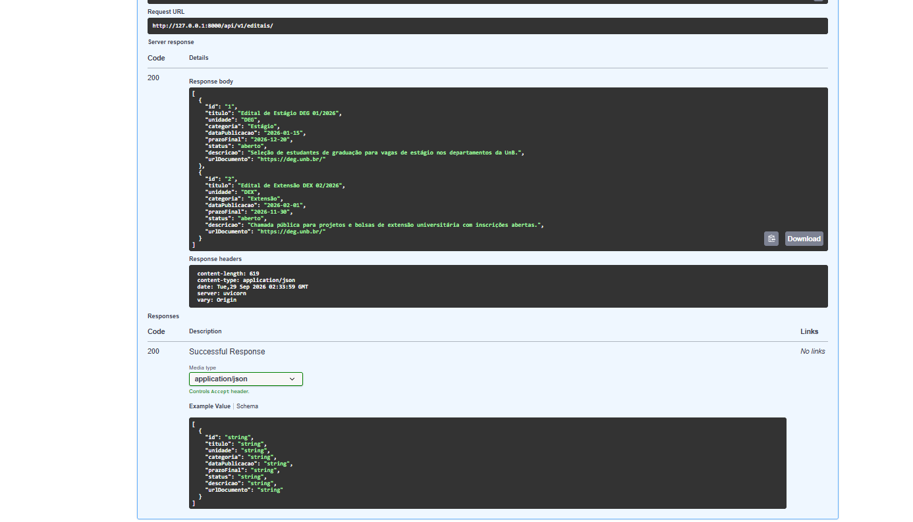

Release Notes – Release 1 (R1)
Projeto: Fique de Olho – Editais UnB
Disciplina: Métodos de Desenvolvimento de Software (MDS / UnB 2026/2) – Grupo G4
Ciclo de Entrega: Release 1 (Validação de Viabilidade e Implementação Inicial)
Data: 28 Setembro de 2026
🎯 1. Objetivo da Release 1
A Release 1 teve como foco principal eliminar incertezas técnicas e de produto, comprovando a viabilidade da solução proposta. o time entregou um documento do backlog do produto, os requisitos funcionais e não funcionais, um story map estruturado, uma descrição dos tipos das personas que queremos atingir, um pequeno protótipo de alta fidelidade no figma, a desisão da stack utilizada e uma pequena implementação a qual conecta uma interface em React a uma API assíncrona em FastAPI, com scraper funcional e infraestrutura pronta para banco de dados relacional.
🚀 2. O que foi Implementado e Entregue
flowchart LR
subgraph Coleta["1. Coleta de Dados"]
UnB["Portal DEG / UnB<br>(HTML Institucional)"]
Scraper["Scraper HTTPX + bs4<br>(Coleta & Parsing)"]
UnB --> Scraper
end
subgraph Backend["2. API Backend (FastAPI)"]
API["FastAPI 0.115<br>(Rotas REST)"]
Swagger["OpenAPI / Swagger<br>(/docs e /health)"]
DB["PostgreSQL 16<br>(Docker Compose)"]
Scraper -. Ingestão .-> API
API --> DB
API --- Swagger
end
subgraph Frontend["3. Interface Web (React)"]
Vite["React 18 + Vite + TS"]
Home["HomePage<br>(Cards, Filtros, Busca)"]
Detail["EditalDetailPage<br>(Prazos, Links, PDF)"]
Vite --> Home
Vite --> Detail
end
API -->|HTTP / JSON| Vite
💻 2.1. Frontend Web (React 18 + TypeScript + Vite)
Uma aplicação web responsiva, leve e com foco em usabilidade (RNF04):
- HomePage interativa:
- Hero Section: Mensagem clara de valor e contador de editais ativos em tempo real.
-
Barra de Filtros Dinâmicos (
FilterBar): Filtragem instantânea por categoria (Bolsas, Estágio, Pesquisa, Extensão). -
Grid de Cards (
EditalCard): Exibição resumida com título, órgão/decanato, tags de categoria, prazo de inscrição e status (Aberto vs. Encerrado). - Ação de Favoritar (
FavoriteButton): Alternância de estado visual da estrela (favoritado/não favoritado). - Página de Detalhes (
EditalDetailPage): - Consulta individual por identificador (
/editais/:id). - Apresentação estruturada de cronograma, público-alvo, requisitos e botão direto que abre o PDF oficial no domínio da UnB em nova aba.

⚙️ 2.2. Backend (FastAPI + Python 3.12)
Construído sob uma arquitetura modular, garantindo que cada domínio de negócio seja independente:
- Estrutura Modular:
core/: Configurações centralizadas compydantic-settings(.env) e motor de conexão SQLAlchemy.modules/editais/: Endpoints de listagem (GET /api/v1/editais/) e detalhamento (GET /api/v1/editais/{id}).modules/scraper/: Módulo de coleta desacoplado da camada web (cumprindo a ADR 0001).- Documentação Viva e Healthcheck:
- Endpoint de integridade:
GET /healthrespondendo com status 200 e versão. - Redirecionamento automático da raiz (
/) para o Swagger UI (/docs).

- Containerização:
Dockerfileotimizado para o FastAPI.docker-compose.ymlorquestrando a API e o banco de dados PostgreSQL 16.
🕷️ 2.3. Scraper do Portal DEG (BeautifulSoup + HTTPX)
- Coleta automatizada de editais recentes a partir do portal oficial do DEG/UnB.
- Extração e higienização de títulos, links de documentos em PDF e identificação de retificações.
- Tratamento robusto de timeouts e falhas de rede.
🗄️ 2.4. Banco de Dados (PostgreSQL 16 + SQLAlchemy + Alembic)
- Schema relacional inicial implementado: A migration 0001_initial_schema cria as tabelas editais, edital_documentos, usuarios e favoritos.
- Integridade dos dados: A URL de origem do edital e o e-mail do usuário são únicos; cada documento pertence a um edital; e a chave primária composta de favoritos impede que o mesmo edital seja favoritado mais de uma vez pelo mesmo usuário
- Limite da R1: O schema e sua migration inicial estão definidos, mas a listagem da API ainda opera em memória. A integração das rotas e serviços com consultas e gravações no banco permanece como evolução planejada.
📚 3. Engenharia de Requisitos e Decisões
| Artefato | Localização | Descrição / Destaques |
|---|---|---|
| Especificação de Requisitos | docs/Requisitos/Requisitos.md |
13 Requisitos Funcionais (RF01 a RF13) e 8 Requisitos Não Funcionais (RNF01 a RNF09) mapeados detalhadamente. |
| User Story Map | docs/Requisitos/StoryMap.md |
Organizado em 3 Épicos (Descoberta, Detalhamento e Acompanhamento/Notificações), 9 Funcionalidades, 9 Histórias de Usuário e Critérios de Aceitação. |
| Modelo de Domínio | CONTEXT.md |
Glossário ubíquo formalizando termos: Edital, Retificação, Ingestão/Coleta, Favorito e Busca Semântica. |
| ADR 0001 (Backend) | docs/adr/0001-stack-backend.md |
Escolha de FastAPI, PostgreSQL (+ pgvector na R2), BeautifulSoup, pdfplumber e OCR Tesseract como fallback. |
| ADR 0002 (Frontend) | docs/adr/0002-stack-frontend.md |
Escolha de React, TypeScript, Vite e CSS responsivo para acessibilidade WCAG 2.1 AA. |
| ADR 003 (Banco de Dados) | 'docs/adr/0003-database-schema.md' | Define o schema inicial PostgreSQL/SQLAlchemy para editais, documentos, usuários e favoritos, suas relações e restrições de integridade, além do uso obrigatório de migrations Alembic para evoluir o banco. |
| Personas e Backlog | docs/Requisitos/produto/ |
Personas alinhadas à realidade da comunidade discente e backlog priorizado. |
| Portal MkDocs | mkdocs.yml |
Documentação completa versionada e compilada em HTML estático com tema Material. |
| --- |
🔍 4.O que está Funcional vs. Próximos Passos (Release 2)
| Componente | Estado na Release 1 (R1) | Evolução Planejada para a Release 2 (R2) |
|---|---|---|
| Listagem da API | Funcional em memória (mock estruturado conforme contrato OpenAPI). | Persistência definitiva em tabelas do PostgreSQL via migrations Alembic. |
| Execução do Scraper | Script funcional testado com HTML real e mockado. | Agendamento periódico automático (cron/worker) populando o banco de dados. |
| Favoritos | Interação visual e reativa na interface do usuário. | Persistência associada ao perfil do estudante com autenticação (RF03). |
| Notificações | Especificação e critérios de aceitação definidos (US09). | Disparo de alertas por e-mail institucional e notificações no navegador (RF01/RF12). |
| Busca Semântica | Arquitetura planejada na ADR 0001. | Implementação de embeddings com sentence-transformers e pgvector. |